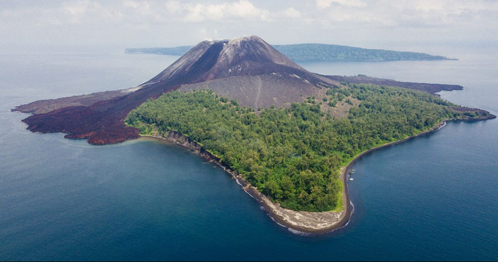

FAKTA SEPUTAR PROVINSI LAMPUNG YANG MUNGKIN BELUM KAMU KETAHUI

Provinsi Lampung terletak di ujung selatan Pulau Sumatra dan berbatasan langsung dengan Selat Sunda, menjadikannya pintu gerbang dari Pulau Jawa ke Sumatra. Ibu kota provinsi ini adalah Bandar Lampung, yang merupakan hasil penggabungan dua kota, yaitu Tanjungkarang dan Telukbetung. Lampung dihuni oleh suku asli Lampung serta pendatang dari berbagai daerah di Indonesia, dengan suku Jawa, Sunda, dan Bali sebagai kelompok etnis dominan setelah penduduk asli. Bahasa daerah yang digunakan adalah Bahasa Lampung dengan beberapa dialek, seperti dialek A (Api) dan O (Nyo), namun Bahasa Indonesia juga sangat umum digunakan. Secara ekonomi, Lampung dikenal sebagai produsen utama kopi robusta di Indonesia serta penghasil lada hitam, kakao, kelapa sawit, dan cengkeh. Lampung juga memiliki destinasi wisata populer seperti Taman Nasional Way Kambas yang terkenal dengan konservasi gajah sumatra, Pantai Pasir Putih dengan pasirnya yang halus, Pulau Pahawang yang terkenal untuk snorkeling, serta Gunung Anak Krakatau yang menarik wisatawan dengan sejarah letusan besar pada tahun 1883. Provinsi ini memiliki kekayaan flora dan fauna, termasuk gajah sumatra, harimau sumatra, dan berbagai spesies burung endemik. Jalur transportasi di Lampung menghubungkan Pulau Jawa dan Sumatra melalui Pelabuhan Bakauheni yang melayani penyeberangan ke Pelabuhan Merak di Banten, serta Bandara Internasional Radin Inten II yang memudahkan akses udara. Budaya Lampung sangat kaya dengan tradisi seperti upacara adat "Cakak Pepadun" dan tarian khas seperti Tari Sigeh Penguten. Songket Lampung dikenal dengan motif yang unik dan khas. Dalam hal kuliner, Lampung menawarkan makanan khas seperti seruit (ikan yang dicampur sambal dan tempoyak), pindang ikan, serta keripik pisang yang populer sebagai oleh-oleh. Fakta-fakta ini menunjukkan betapa kaya dan beragamnya Provinsi Lampung dari sisi alam, budaya, dan ekonomi.
REKOMENDASI WISATA YANG ADA DI PROVINSI LAMPUNG
Taman Nasional Way Kambas: Taman Nasional ini merupakan pusat konservasi gajah sumatra yang terkenal di Indonesia. Pengunjung dapat melihat gajah di habitat aslinya, menyaksikan pertunjukan gajah, atau bahkan mencoba menunggangi gajah di area tertentu. Selain gajah, taman ini juga menjadi rumah bagi harimau sumatra, badak sumatra, dan berbagai jenis burung. Way Kambas adalah tempat yang tepat untuk wisata edukatif dan petualangan alam.
Pulau Pahawang: Terletak di Kabupaten Pesawaran, Pulau Pahawang adalah destinasi favorit untuk snorkeling dan diving. Air lautnya yang jernih dan terumbu karang yang indah menjadikannya surga bagi penyelam. Pulau ini juga memiliki biota laut yang beragam, termasuk ikan-ikan tropis berwarna-warni. Selain snorkeling, wisatawan bisa menikmati keindahan pantai yang tenang dan memukau, serta menginap di penginapan yang menawarkan pemandangan laut langsung.
Pantai Pasir Putih: Pantai ini terkenal dengan pasir putihnya yang lembut dan pemandangan laut yang luas. Terletak tidak jauh dari pusat Kota Bandar Lampung, Pantai Pasir Putih menjadi pilihan sempurna untuk liburan singkat dan piknik bersama keluarga. Di sini, pengunjung bisa menikmati aktivitas seperti berenang, bermain perahu, dan menikmati matahari terbenam yang memukau.
Gunung Anak Krakatau: Gunung berapi aktif ini adalah salah satu destinasi petualangan yang paling ikonik di Lampung. Meski memerlukan izin khusus untuk mendaki, Gunung Anak Krakatau menawarkan pengalaman luar biasa dengan pemandangan laut dan lanskap vulkanik yang dramatis. Gunung ini muncul dari sisa-sisa letusan dahsyat Krakatau pada tahun 1883, yang menjadi salah satu letusan paling terkenal dalam sejarah. Aktivitas wisata ini cocok untuk pecinta alam dan pendaki berpengalaman.
Air Terjun Curup Tujuh: Air terjun ini terletak di daerah Lampung Barat dan terkenal dengan tujuh tingkat aliran airnya yang menjadikannya sangat eksotis. Suasana di sekitar air terjun sangat sejuk dan dikelilingi oleh hutan tropis yang lebat, membuatnya tempat yang sempurna untuk hiking dan menikmati alam. Pengunjung dapat bermain air, berfoto, atau sekadar menikmati pemandangan yang memanjakan mata.
REKOMENDASI KULINER LAMPUNG YANG WAJIB KAMU COBA
Seruit: Hidangan khas Lampung ini berupa ikan yang digoreng atau dibakar dan disajikan dengan sambal terasi, tempoyak (fermentasi durian), atau mangga muda. Seruit biasanya dinikmati bersama keluarga atau dalam acara kumpul-kumpul, karena maknanya yang melambangkan kebersamaan. Rasanya yang gurih dan pedas memberikan cita rasa yang khas dan menggugah selera.
Tempoyak: Tempoyak adalah olahan fermentasi durian yang sangat populer di Lampung. Biasanya digunakan sebagai pelengkap atau bumbu untuk hidangan ikan, terutama dalam masakan seperti pindang tempoyak. Rasa tempoyak yang asam dan unik menambah kelezatan masakan, membuatnya disukai oleh para pencinta durian.

Pindang Patin Lampung: Hidangan berkuah segar ini terbuat dari ikan patin yang dimasak dengan bumbu khas Lampung, seperti serai, daun jeruk, dan cabai. Rasanya yang asam, pedas, dan sedikit manis membuatnya sangat nikmat dan cocok untuk disantap hangat-hangat. Pindang patin juga sering disajikan dengan tambahan irisan nanas untuk memperkaya cita rasa.
Gulai Taboh: Gulai Taboh merupakan masakan khas Lampung yang berbahan dasar santan dan ikan laut, biasanya ikan tongkol atau ikan tenggiri. Hidangan ini diberi bumbu rempah seperti kunyit, jahe, dan lengkuas, sehingga menghasilkan rasa gurih yang lezat. Terkadang, sayuran seperti kacang panjang atau daun singkong ditambahkan ke dalam gulai ini untuk variasi.
Keripik Pisang: Lampung dikenal sebagai produsen keripik pisang yang terkenal di Indonesia. Keripik pisang Lampung memiliki berbagai varian rasa, mulai dari original, cokelat, keju, hingga rasa-rasa lainnya yang lebih modern seperti matcha dan stroberi. Keripik ini renyah dan memiliki rasa manis yang pas, menjadikannya oleh-oleh favorit wisatawan.